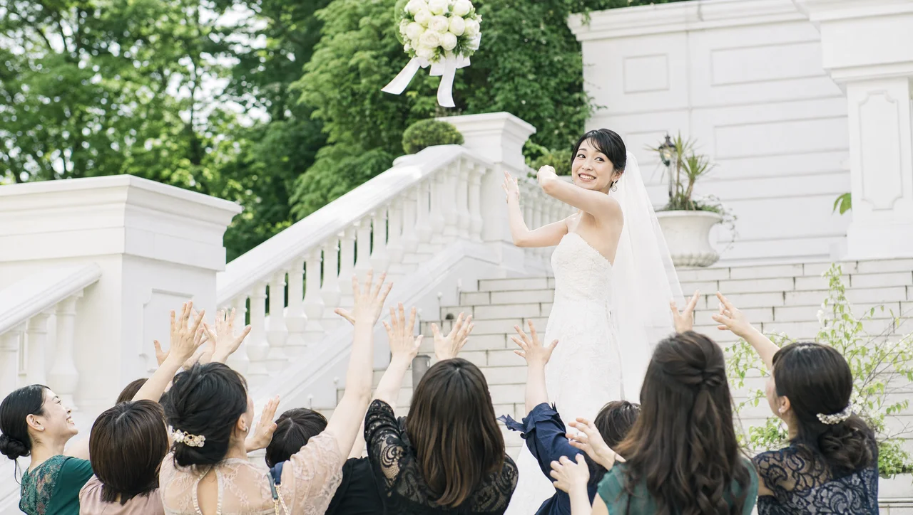
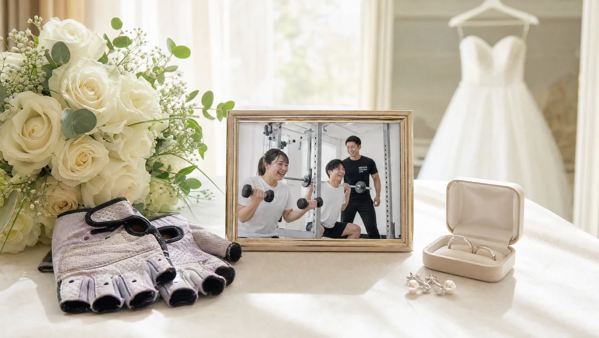

BRIDAL
ウェディングドレスで一番見られるのはどこ？二の腕・背中・デコルテの部位別トレーニング

SUMMARY
ウェディングドレスで最も視線が集まるのは、二の腕・背中・デコルテの3部位です。ゲストや写真のアングルは花嫁の後ろ姿と上半身に集中するため、この3部位を優先して鍛えるのが効率的。ドレスの形によって見える部位が変わるため、着るドレスに合わせて優先順位をつけるのがコツです。
部位ランキング：見られるのは上半身と後ろ姿
ウェディングドレスで視線が集まる部位は、上から順に「二の腕・背中・デコルテ」の3つです。ゲストの目線も、カメラのアングルも、花嫁の上半身と後ろ姿に集中するためです。
披露宴では、ゲストは着席した状態で花嫁を見上げる、あるいは正面から見る時間が長くなります。入場やバージンロードでは後ろ姿が長く映り、乾杯や歓談では上半身が中心。つまり、ドレス姿の印象は下半身よりも上半身で決まりやすいのです。
限られた期間で仕上げるなら、全身を均等に鍛えるより、まず見られる3部位に優先順位をつけるのが効率的。以下でそれぞれの理由と対策を見ていきましょう。※効果には個人差があります。
ちなみに、下半身が気にならないわけではありません。ただ、ドレスはスカート部分で下半身のラインをカバーするデザインが多く、ゲストの視線が届きにくいのも事実です。「見える部分から先に、見えにくい部分は後で」という順番で取り組むと、同じ努力でも当日の印象が大きく変わります。時間に余裕があれば下半身やウエストにも広げていきましょう。
二の腕：クラッチブーケで正面に来る
二の腕は、ブーケを持つ姿勢で常に正面に来るため、ドレスで最も気になりやすい部位です。クラッチブーケを体の前で持つと、腕が体の中心に寄り、二の腕のラインが写真にはっきり残ります。
ノースリーブやオフショルダーのドレスでは、二の腕がそのまま見えるため、特に対策の効果を感じやすい部位です。二の腕の後ろ側（振袖と呼ばれる部分）は日常であまり使われないため、意識的に動かすトレーニングが有効になります。
ジムでは、腕の後ろ側を狙った種目や、肩まわりを含めた上半身全体のバランスを整えるメニューを組みます。腕だけを細くしようとするより、肩から二の腕にかけてのラインを整えるほうが、ドレス姿全体の印象が引き締まって見えます。

背中：バージンロードでゲストが見続ける
背中は、入場からバージンロードにかけてゲストが最も長く見続ける部位です。背中が大きく開いたバックスタイルのドレスも多く、後ろ姿の美しさが花嫁の印象を大きく左右します。
背中は自分では見えにくいため、普段ケアが後回しになりがちな部位です。しかし、姿勢が丸まっていたり、背中まわりに厚みがあると、ドレスの開きから印象に出やすくなります。逆に、肩甲骨まわりが引き締まり、姿勢がすっと伸びるだけで後ろ姿は見違えます。
ジムでは、背中の中央を寄せる種目や姿勢を支える筋肉を中心に、後ろ姿全体のシルエットを整えるメニューを行います。姿勢の改善は当日の立ち居振る舞いにも直結するため、写真だけでなく所作の美しさにもつながります。※効果には個人差があります。
挙式日から逆算する短期集中プログラム
ブライダル集中プランの料金を見る →デコルテ：写真のクローズアップで主役になる
デコルテは、顔まわりの写真クローズアップで必ず一緒に写る「第二の顔」です。ベアトップやビスチェタイプのドレスでは、デコルテの見え方が上半身全体の印象を決めます。
デコルテそのものを筋トレで大きく変えることは難しいですが、姿勢・肩の位置・鎖骨まわりのむくみを整えることで、すっきりと見せることは十分に可能です。猫背で肩が前に出ていると鎖骨が埋もれて見えるため、肩甲骨を寄せる姿勢づくりが効いてきます。
ジムでのトレーニングに加え、式直前は塩分やむくみのケアも大切です。トレーニングと姿勢、コンディション調整を組み合わせることで、写真映えするデコルテに近づけます。
ドレス形別の優先部位（Aライン／マーメイド／ベアトップ）
力を入れるべき部位は、着るドレスの形によって変わります。着たいドレスが決まっているなら、そのシルエットに合わせて優先順位をつけましょう。
- Aライン：上半身がすっきり見えるデザイン。二の腕とデコルテを中心に整えると、全体のバランスが際立ちます。
- マーメイド：体のラインが出るため、背中・くびれ・姿勢が重要。後ろ姿とウエストまわりを意識します。
- ベアトップ／ビスチェ：肩・デコルテ・背中がそのまま見えるため、上半身全体をまんべんなく整えるのが理想です。
まだドレスが決まっていない場合でも、二の腕・背中・デコルテを整えておけば、どの形を選んでも対応しやすくなります。試着から逆算した計画を立てたい方は、挙式までの逆算スケジュールの記事もあわせてご覧ください。
自宅ケアとジムの使い分け
自宅ケアは「毎日の積み重ね」、ジムは「正しい負荷と部位の狙い撃ち」と役割を分けるのが効率的です。両方を組み合わせることで、限られた期間でも成果を出しやすくなります。
自宅では、姿勢を意識した過ごし方、肩甲骨を動かすストレッチ、むくみを流すケアなど、毎日コツコツ続けられることを担当します。一方で、狙った部位に適切な負荷をかけるトレーニングは、フォームを見てもらえる環境のほうが安全で効果的です。
NEXUSは完全個室・ノータッチ指導で、女性が集中して取り組める環境。手ぶらで通えて全店8:00〜23:00営業のため、自宅ケアと並行して無理なく続けられます。「毎日は自宅、週1〜2回はジム」という組み合わせが、花嫁の上半身づくりには現実的です。※効果には個人差があります。
自宅でのセルフケアは、正しいフォームを知らないまま続けると効果が出にくかったり、肩や腰に負担がかかったりすることもあります。ジムで一度正しい動きを覚えてから自宅で再現すれば、毎日のケアの質が上がります。「ジムで学び、自宅で反復する」という流れをつくることが、限られた期間で二の腕・背中・デコルテを仕上げる一番の近道です。まずは無料体験で、自分の体に合った動きを確認してみてください。
料金・回数・期間の目安をチェック
ブライダル集中プランの料金を見る →FAQ
よくある質問
Q二の腕だけを部分的に細くすることはできますか？＋
Q背中が開いたドレスを着たいのですが、どのくらい前から準備すべき？＋
Qトレーニングでデコルテはきれいになりますか？＋
見せたい部位から、効率よく整えませんか
挙式日までの残り日数に合わせて、あなた専用のプランをご提案します。
※無理な勧誘は一切ありません。
本記事で紹介するブライダルボディメイクの成果には個人差があります。掲載の画像はサービス内容をわかりやすくお伝えするためのイメージです。実際のプランは無料体験時のカウンセリングで、お一人おひとりの体調・目標・挙式日に合わせてご提案します。